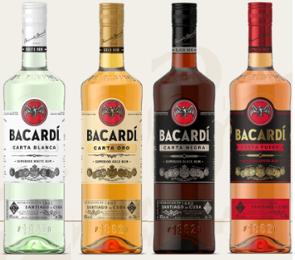

사탕수수즙 또는 당밀 등의 제당 공정 부산물을 발효·증류시켜 만든 증류주. 달콤한 냄새와 특유의 맛이 있고, 알코올분은 44∼45％, 엑스트랙트분은 0.2∼0.8％이다. 위스키, 브랜디, 보드카와 마찬가지로 증류주이기 때문에 사탕수수로 만들긴 하지만 단맛이 나지는 않는다
럼60ml라임즙20ml설탕2tsp을 쉐이킹해서 만든다
럼60ml콜라180ml라임즙15ml를 섞어 만든다
럼45ml 민트6장 백설탕2tsp 라임주스20ml 탄산수180ml 섞어서 만든다
럼30ml큐라소15ml 레몬주스15ml 를 쉐이킹해서 만든다
럼30ml피나콜라다믹스60ml 파인애플주스 60ml 를 섞어서 만든다
럼30ml블루큐라소30ml 말리부30ml 파인애플주스120ml 를 쉐이킹해서 만든다